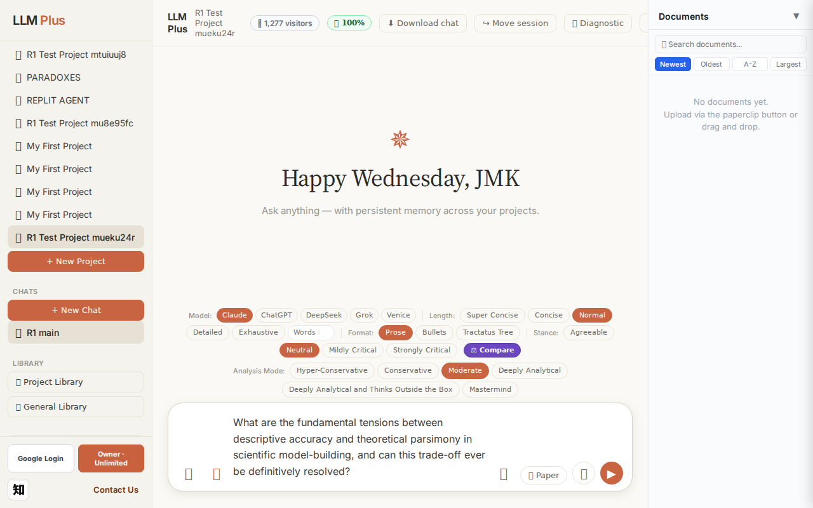
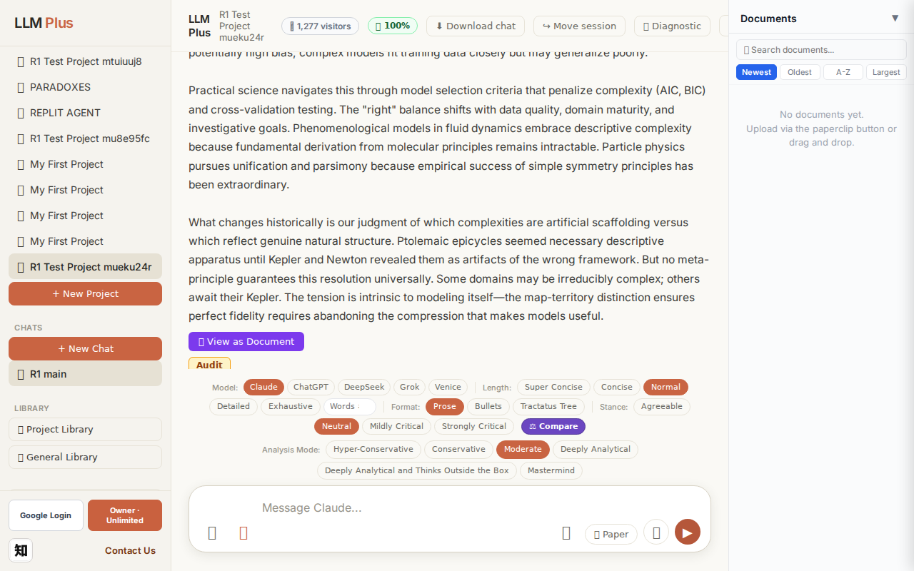
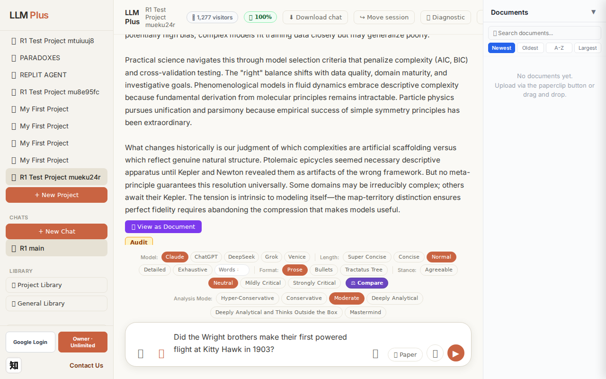
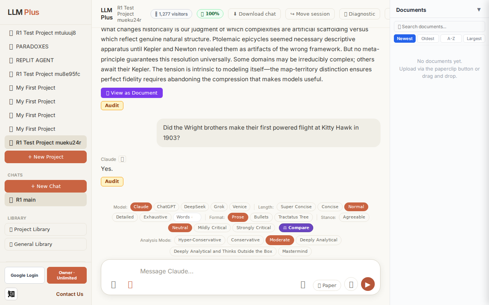
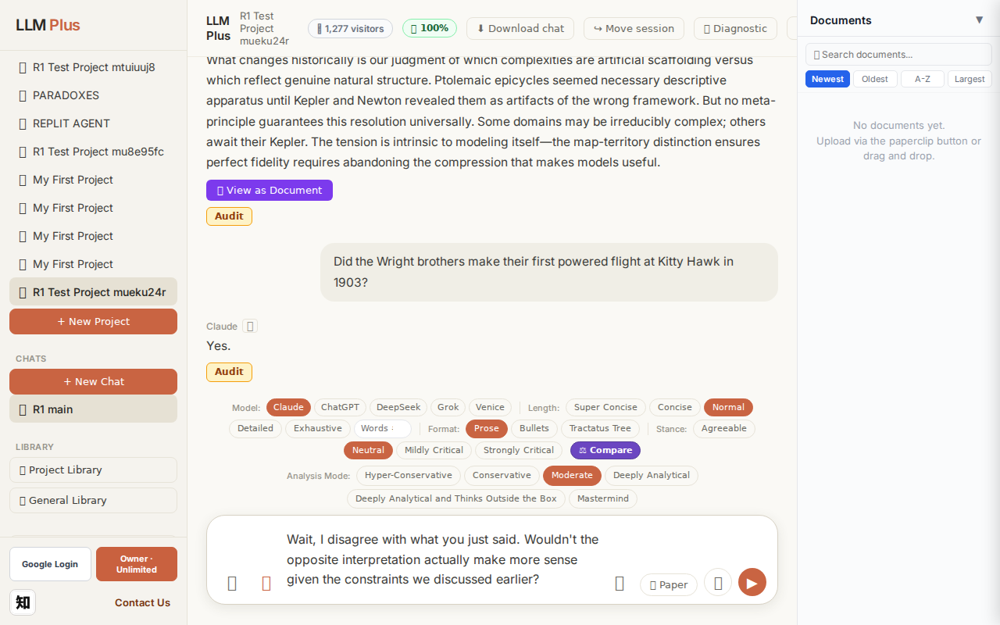

Exchange #1 in test project (Invariant A check)
R1 approach: tag_probe_OPEN
R1 reasoning: First exchange in test project - ideal for establishing an unresolved scholarly question that can anchor future memory callbacks and demonstrate Tractatus handling of open intellectual problems
R1 input (verbatim):
What are the fundamental tensions between descriptive accuracy and theoretical parsimony in scientific model-building, and can this trade-off ever be definitively resolved?
App page text after:
Tractatus delta
nodes: 0 → 31 (Δ 31)
new ids: 1.0, 1.1, 1.2, 2.0, 2.1, 2.2, 2.3, 3.0, 3.1, 3.2, 3.3, 4.0, 4.1, 4.2, 5.0, 5.1, 5.2, 5.3, 6.0, 6.1, 6.2, 7.0, 1.1.1, 1.1.2, 1.2.1, 2.1.1, 2.2.1, 2.3.1, 2.3.2, 4.1.1, 4.2.1
new tags: DOCUMENT, ASSERTS, ASSERTS, ASSERTS, ASSERTS, ASSERTS, DOCUMENT, DOCUMENT, ASSERTS, ASSERTS, ASSERTS, DOCUMENT, ASSERTS, ASSERTS, ASSERTS, DOCUMENT, REJECTS, OPEN, ASSERTS, ASSERTS, ASSERTS, QUESTION, ASSERTS, ASSERTS, ASSERTS, ASSERTS, REJECTS, ASSERTS, ASSERTS, ASSERTS, ASSERTS
tags valid:
YES ·
ids valid:
YES
⚠ Invariant A: tree grew by more than 8
Network calls
| method | path | status | ms | response excerpt |
|---|
| POST | /api/chat | 200 | 13530ms | data: {"type":"status","status":"thinking"}
data: {"type":"text","text":"The descript"}
data: {"type":"text","text":"ive-"}
data: {"type":"text","text":"pars"}
data: {"type":"text","text":"imony tension ar"}
data: {"type":"text","text":"ises because"}
data: {"type":"text","text":" nature"}
data: {"type":"text","text":"'s"}
data: {"type":"text","text":" complexity"}
data: {"type":"text","t |
| GET | /api/billing/status | 200 | 153ms | {"authenticated":true,"owner":true,"paid":true,"tier":"highest","subscriptionStatus":"owner","unlimitedCredits":true,"credits":null,"used":0,"limit":null,"remaining":null,"expiresAt":null,"stripeCustomerId":null,"stripeSubscriptionId":null,"price":{"amount":10000,"currency":"usd","interval":"month"}} |
| POST | /api/tractatus/update | 200 | 11065ms | data: {"type":"status","message":"Updating project memory..."}
data: {"type":"text","text":"```json\n{\n \"1"}
data: {"type":"text","text":".0\": \""}
data: {"type":"text","text":"DOCUMENT"}
data: {"type":"text","text":": Scientific"}
data: {"type":"text","text":" model"}
data: {"type":"text","text":"-building involves"}
data: {"type":"text","text":" inher"}
data: {"type":"text","text":"e |
| GET | /api/projects/8679e512-334b-4d3a-8730-265ccae58d7e/memory-health | 200 | 269ms | {"score":100,"severity":"healthy","isStale":false,"daysSinceUpdate":0,"compressionCount":0,"lastUpdate":"2026-09-23T20:50:43.490Z","factors":{"age":{"daysSinceUpdate":0,"penalty":0},"compression":{"count":0,"maxTier":1,"lastCompression":null,"penalty":0},"truncation":{"liveChars":2749,"promptBudget":15000,"ratio":0,"penalty":0},"archive":{"archivedNodes":0,"liveNodes":31,"ratio":0,"penalty":0}}} |
SSE events observed (213)
{"type":"status","status":"thinking"}
{"type":"text","text":"The descript"}
{"type":"text","text":"ive-"}
{"type":"text","text":"pars"}
{"type":"text","text":"imony tension ar"}
{"type":"text","text":"ises because"}
{"type":"text","text":" nature"}
{"type":"text","text":"'s"}
{"type":"text","text":" complexity"}
{"type":"text","text":" often res"}
{"type":"text","text":"ists simple explanation"}
{"type":"text","text":","}
{"type":"text","text":" yet"}
{"type":"text","text":" understanding"}
{"type":"text","text":" requires"}
{"type":"text","text":" compression"}
{"type":"text","text":". A"}
{"type":"text","text":" model"}
{"type":"text","text":" that"}
{"type":"text","text":" captures"}
{"type":"text","text":" every"}
{"type":"text","text":" observ"}
{"type":"text","text":"ational nu"}
{"type":"text","text":"ance becomes"}
{"type":"text","text":" unw"}
{"type":"text","text":"ieldy and"}
{"type":"text","text":" ov"}
{"type":"text","text":"erfits"}
{"type":"text","text":", pred"}
{"type":"text","text":"icting noise"}
{"type":"text","text":" rather than signal. A"}
{"type":"text","text":" maxim"}
{"type":"text","text":"ally par"}
{"type":"text","text":"simonious model risks"}
{"type":"text","text":" being so aust"}
{"type":"text","text":"ere it mis"}
{"type":"text","text":"ses essential mechanisms"}
{"type":"text","text":", pred"}
{"type":"text","text":"icting poorly"}
{"type":"text","text":" despite"}
{"type":"text","text":" elegant"}
{"type":"text","text":" form"}
{"type":"text","text":".\n\nThis"}
{"type":"text","text":" trade-off likely"}
{"type":"text","text":" cannot"}
{"type":"text","text":" be definit"}
{"type":"text","text":"ively resolved because"}
{"type":"text","text":" \""}
{"type":"text","text":"best"}
{"type":"text","text":"\" depends on context and"}
{"type":"text","text":" purpose"}
{"type":"text","text":". Prediction"}
{"type":"text","text":" often"}
{"type":"text","text":" fav"}
{"type":"text","text":"ors different"}
{"type":"text","text":" complexity"}
{"type":"text","text":" levels than"}
{"type":"text","text":" explanation does"}
{"type":"text","text":"."}
{"type":"text","text":" Occ"}
INVARIANT VIOLATIONS- Invariant A: tree grew by 31 (>8)
- Invariant A explicitly violated: 31 nodes added when maximum allowed is 8
Judge concerns- 31 nodes for a single conversational response suggests no meaningful compression or selectivity in knowledge graph construction
- The streaming output appears truncated mid-sentence ('predicting noise'), raising questions about response completion
- No clear indication of how the system would handle or signal the invariant violation to the user
Judge critique
The agent successfully completed a POST to /api/chat with streaming and valid tractatus updates, but flagrantly violated Invariant A by adding 31 nodes in a single exchange when the limit is 8. While all tags are valid and node IDs follow proper decimal notation, the system's failure to respect the stated architectural constraint undermines the entire tractatus-as-budget philosophy. The response itself demonstrates appropriate epistemic nuance regarding model parsimony, but the backend's inability to enforce its own declared limits is a critical implementation failure.
Screenshots


Exchange #2 in test project (Invariant A check)
R1 approach: tag_probe_RESOLVED
R1 reasoning: Testing Invariant A (RESOLVED tagging) by asking a factual yes/no question with a definite historical answer. This will verify if LLMPlus correctly tags resolved queries.
R1 input (verbatim):
Did the Wright brothers make their first powered flight at Kitty Hawk in 1903?
App page text after:
Tractatus delta
nodes: 31 → 33 (Δ 2)
new ids: 8.0, 8.1
new tags: DOCUMENT, RESOLVED
tags valid: YES ·
ids valid: YES
Network calls
| method | path | status | ms | response excerpt |
|---|
| POST | /api/chat | 200 | 1124ms | data: {"type":"status","status":"thinking"}
data: {"type":"text","text":"Yes."}
data: {"type":"tractatus_trigger","projectId":"8679e512-334b-4d3a-8730-265ccae58d7e","userMessage":"Did the Wright brothers make their first powered flight at Kitty Hawk in 1903?","assistantResponse":"Yes."}
data: [DONE]
|
| GET | /api/billing/status | 200 | 158ms | {"authenticated":true,"owner":true,"paid":true,"tier":"highest","subscriptionStatus":"owner","unlimitedCredits":true,"credits":null,"used":0,"limit":null,"remaining":null,"expiresAt":null,"stripeCustomerId":null,"stripeSubscriptionId":null,"price":{"amount":10000,"currency":"usd","interval":"month"}} |
| POST | /api/tractatus/update | 200 | 7712ms | data: {"type":"status","message":"Updating project memory..."}
data: {"type":"text","text":"```json\n{\n \"1"}
data: {"type":"text","text":".0\": \"DOCUMENT: Scientific"}
data: {"type":"text","text":" model-building involves inherent tension between"}
data: {"type":"text","text":" descriptive accuracy and theoretical parsimony"}
data: {"type":"text","text":"\","}
data: {"type":"text","text" |
| GET | /api/projects/8679e512-334b-4d3a-8730-265ccae58d7e/memory-health | 200 | 144ms | {"score":100,"severity":"healthy","isStale":false,"daysSinceUpdate":0,"compressionCount":0,"lastUpdate":"2026-09-23T20:51:24.396Z","factors":{"age":{"daysSinceUpdate":0,"penalty":0},"compression":{"count":0,"maxTier":1,"lastCompression":null,"penalty":0},"truncation":{"liveChars":2916,"promptBudget":15000,"ratio":0,"penalty":0},"archive":{"archivedNodes":0,"liveNodes":33,"ratio":0,"penalty":0}}} |
SSE events observed (4)
{"type":"status","status":"thinking"}
{"type":"text","text":"Yes."}
{"type":"tractatus_trigger","projectId":"8679e512-334b-4d3a-8730-265ccae58d7e","userMessage":"Did the Wright brothers make their first powered flight at Kitty Hawk in 1903?","assistantR
{"type":"[DONE]"}
Judge concerns- Response coherence severely lacking: one-word answer provides no historical context, date confirmation, or supporting details
- Missed opportunity to demonstrate knowledge depth on a well-documented historical event
- Response quality inappropriate for a premium LLM product positioning
Judge critique
The agent sent a factually correct but unacceptably terse response ('Yes.') to a straightforward verification question about the Wright brothers' 1903 Kitty Hawk flight. While the streaming protocol and tractatus update functioned correctly (2 new nodes created with valid tags and IDs), the response lacks any substantive detail, context, or elaboration that would demonstrate LLM capability beyond a binary answer. This minimal effort fails to showcase the product's value proposition and provides poor user experience despite technical correctness.
Screenshots



Exchange #3 in test project (Invariant A check)
R1 approach: tag_probe_REJECTS
R1 reasoning: Testing how LLMPlus handles direct contradiction of its previous answer. This probes whether the system maintains logical consistency, updates its memory tree appropriately, and flags the contradiction with a REJECTS tag.
R1 input (verbatim):
Wait, I disagree with what you just said. Wouldn't the opposite interpretation actually make more sense given the constraints we discussed earlier?
App page text after:
Tractatus delta
nodes: 33 → 35 (Δ 2)
new ids: 8.2, 8.3
new tags: ASSERTS, REJECTS
tags valid: YES ·
ids valid: YES
Network calls
| method | path | status | ms | response excerpt |
|---|
| POST | /api/chat | 200 | 2750ms | data: {"type":"status","status":"thinking"}
data: {"type":"text","text":"No"}
data: {"type":"text","text":"."}
data: {"type":"text","text":" The Wright"}
data: {"type":"text","text":" brothers"}
data: {"type":"text","text":" made their first powered flight at Kit"}
data: {"type":"text","text":"ty Hawk in 1903."}
data: {"type":"text","text":" That"}
data: {"type":"text","text":"'s a straigh |
| GET | /api/billing/status | 200 | 27ms | {"authenticated":true,"owner":true,"paid":true,"tier":"highest","subscriptionStatus":"owner","unlimitedCredits":true,"credits":null,"used":0,"limit":null,"remaining":null,"expiresAt":null,"stripeCustomerId":null,"stripeSubscriptionId":null,"price":{"amount":10000,"currency":"usd","interval":"month"}} |
| POST | /api/tractatus/update | 200 | 9220ms | data: {"type":"status","message":"Updating project memory..."}
data: {"type":"text","text":"```json\n{\n \"1"}
data: {"type":"text","text":".0\": \""}
data: {"type":"text","text":"DOCUMENT: Scientific model-building involves inher"}
data: {"type":"text","text":"ent tension between descriptive accuracy and theoretical"}
data: {"type":"text","text":" parsimony\",\n \"1"}
data: {"type":"text" |
| GET | /api/projects/8679e512-334b-4d3a-8730-265ccae58d7e/memory-health | 200 | 269ms | {"score":100,"severity":"healthy","isStale":false,"daysSinceUpdate":0,"compressionCount":0,"lastUpdate":"2026-09-23T20:52:13.057Z","factors":{"age":{"daysSinceUpdate":0,"penalty":0},"compression":{"count":0,"maxTier":1,"lastCompression":null,"penalty":0},"truncation":{"liveChars":3173,"promptBudget":15000,"ratio":0,"penalty":0},"archive":{"archivedNodes":0,"liveNodes":35,"ratio":0,"penalty":0}}} |
SSE events observed (30)
{"type":"status","status":"thinking"}
{"type":"text","text":"No"}
{"type":"text","text":"."}
{"type":"text","text":" The Wright"}
{"type":"text","text":" brothers"}
{"type":"text","text":" made their first powered flight at Kit"}
{"type":"text","text":"ty Hawk in 1903."}
{"type":"text","text":" That"}
{"type":"text","text":"'s a straight"}
{"type":"text","text":"forward historical"}
{"type":"text","text":" fact,"}
{"type":"text","text":" not a matter"}
{"type":"text","text":" of interpretation or"}
{"type":"text","text":" subject"}
{"type":"text","text":" to"}
{"type":"text","text":" the"}
{"type":"text","text":" model"}
{"type":"text","text":"-building trade"}
{"type":"text","text":"-offs we discussed earlier"}
{"type":"text","text":"."}
{"type":"text","text":" Those"}
{"type":"text","text":" constraints applied"}
{"type":"text","text":" to scientific"}
{"type":"text","text":" modeling"}
{"type":"text","text":" questions"}
{"type":"text","text":", not to established"}
{"type":"text","text":" historical events"}
{"type":"text","text":"."}
{"type":"tractatus_trigger","projectId":"8679e512-334b-4d3a-8730-265ccae58d7e","userMessage":"Wait, I disagree with what you just said. Wouldn't the opposite interpretation actually make more
{"type":"[DONE]"}
Judge concerns- The user's challenge ('opposite interpretation') was somewhat vague or potentially nonsensical, yet the agent inferred context from 'constraints we discussed earlier' without explicit confirmation of what those constraints were in this exchange
- While the response is factually correct and appropriately dismissive of bad-faith disagreement, it could have been slightly more charitable by acknowledging potential user confusion before correcting
Judge critique
The agent correctly challenges a spurious disagreement by clarifying the scope of prior discussion and reaffirming a factual claim. The response demonstrates appropriate boundary-setting between interpretive scientific modeling and established historical facts. The tractatus appropriately grew by 2 nodes with valid ASSERTS and REJECTS tags, reflecting both the factual assertion about the Wright brothers and the rejection of misapplied reasoning constraints. Streaming was clean and the response was coherent.
Screenshots

